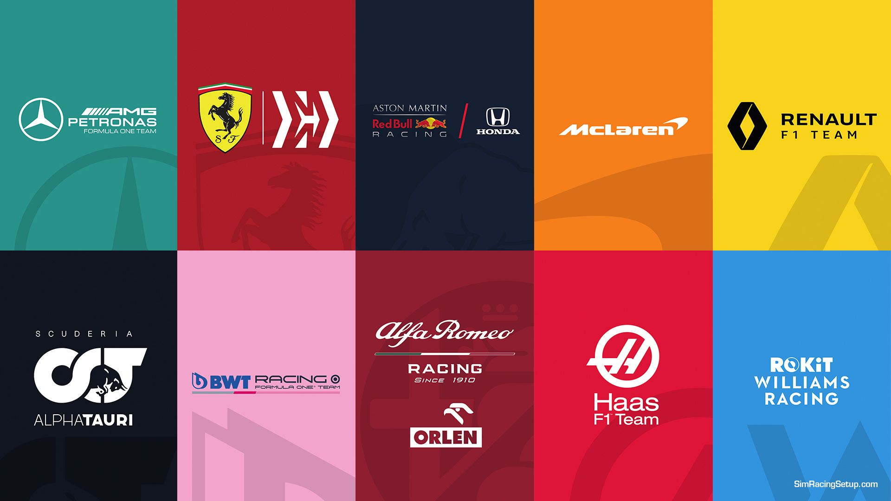
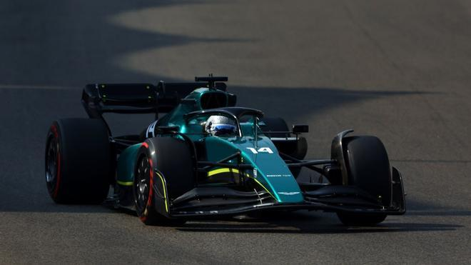

¿QUÉ ES LA FORMULA 1?
Para empezar hablando de este deporte es necesario que estes al día, ya que, hay muchas noticias al día sobre la Formula 1.
Este deporte trata de un Campeonato Mundial de Fórmula 1 de la FIA, más conocido como Fórmula 1, F1 o Fórmula Uno. Sin embargo, esta es la principal competición de automovilismo internacional y el campeonato de deportes de motor más popular y prestigioso del mundo. La entidad que la dirige es la Federación Internacional del Automóvil.
En este deporte participan varios equipos conocidos de marcas internacionales que son muy famosas. Esta son todas las que participan:
⬇ EQUIPOS QUE REPRESENTAN ESTE DEPORTE ⬇

¡NOTICIAS DE ULTIMA HORA!
PILLAN A FERNANDO ALONSO CON UNA GRAN NOVEDAD EN JEREZ

Fecha de publicación: 12/02/2023, 18:32
• El asturiano ha rodado con el AMR22 totalmente rotulado en los test de Jerez.
• El asturiano ha rodado con el AMR22 totalmente rotulado en los test de Jerez
El español, que llega a Aston Martin para suplir la marcha de Vettel y convertirse en el compañero de Stroll, ha disparado la ilusión entre sus aficionados y las expectativas le sitúan ya entre los candidatos al título, algo que parece complicado en su primera temporada.
El asturiano ha realizado sus primeras vueltas con el monoplaza del 2022 en un test de neumáticos Pirelli, donde ha dejado muy buenas sensaciones. La normativa impide utilizar el de esta temporada hasta que no arranque la pretemporada 2023.
¿Luchar por el título?
Alonso ha aterrizado en la escudería británica en lo que es un proyecto más que ambicioso. Tras la salida de Sebastian Vettel en forma de retirada, Aston Martin sigue creciendo a pasos agigantados y el reto pasa por consolidarse en la aristocracia de la F1.
¡MERCEDES PRESENTA SU COCHE Y VUELVEN DE NEGRO!
Fecha de publicación: 14/02/2023, 21:17
• Back in black. Mercedes presentó el W14 este miércoles en Silverstone y dio un paso atrás en cuanto a la decoración, vuelve el negro de 2020 y 2021; pero no en cuanto a filosofía: el concepto ‘sin pontones’ que ya lucieron el año pasado, y que no se manifestó más competitivo que las propuestas de Red Bull y Ferrari, se mantiene vivo en este nuevo monoplaza. Hamilton y Russell pilotarán una evolución del W13 y en la parrilla se mantendrán tres grandes corrientes a la hora de afrontar el reglamento técnico en clave aerodinámica: la de Milton Keynes, que han seguido casi todos los demás; la de Maranello, a la que se asemejan algunos en mayor o menor medida; y la de Mercedes. Que nadie más ha querido copiar.
• “Hay cambios significativos pero el ADN se mantiene, hemos hecho todo lo posible para que los problemas del año pasado no se repitan”, explican Mike Elliot y Hywell Thomas, los ingenieros que firman el chasis y el motor. Atrás quedan los tiempos de James Allison o Andy Cowell, ingenieros de éxito que han dado un paso atrás o han abandonado la compañía en los últimos años.
• El color negro no está motivado por la lucha antirracista de Sir Lewis, o no solo: sin pintura es más ligero, y ningún monoplaza está en el peso mínimo. Así que la librea tiene motivaciones detrás más allá de la estética. No es un secreto que todos los equipos, en mayor o menor medida, raspen la pintura para que se vea el color ‘fibra de carbono’. Incluido el Ferrari, cada vez más negro y menos rojo. El W14 se va al asfalto durante la tarde de este miércoles, lo pilotarán Hamilton y Russell. En cualquier caso, debe ser complicado organizar una presentación un día después de que Ferrari rompa la baraja y reviente Fiorano con las primeras vueltas del SF-23. Desde esa perspectiva, cualquier otro evento digital y sin aficionados es frío y ocultista.